FIREVISION AI
Har feature kahan hai, kya click karna hai, kya bharna hai aur kya dikhega: cameras daalna, naqsha banana, calibration, evacuation raasta, kamron mein log (heatmap), crowd limits, aag aur dhuwan ke incidents, sensors, sprinklers, reports, AI sensitivity, notifications aur baqi sab. Tareekh: 2026-11-04 (naya dark UI).
A · Shuru
1. Ye Guide Kya Hai?
Ye guide batati hai ke FireVision AI ka har feature kaise use karna hai: kahan click karna hai, kya bharna hai, aur kya dikhega.
| Kaun si guide | Kis liye |
|---|---|
| Ye (Features guide) | Har feature use kaise karein |
User guide (FIREVISION_AI_USER_GUIDE_ROMAN_URDU.html) | Naye PC par install, Safe Test Mode, aur har feature ka test + checklist |
| Project guide v5 | Andar se kaise kaam karta hai (code, AI, accuracy) |
Do qisam ke log:
| Role | Kya kar sakta hai |
|---|---|
| Admin | Sab kuch + Settings (cameras add/edit/delete) + AI Settings mein sensitivity Apply |
| Operator | Overview, Live Cameras, Floor Plan, Occupancy, Incidents (resolve), Sensors, Sprinklers, Activity Log, Reports, Notifications, dispatch. Settings nahi, sensitivity badal nahi sakta (sirf dekh sakta hai) |
ℹ️ Is guide ki saari tasveerein naye UI ki hain aur simulated test data (nakli cameras, sensors aur aag) ke saath li gayin. Un mein "SIMULATED DATA" / "SIM DATA" likha hota hai. Ye kisi asli building ka data nahi.
⚠️ Ye ek FYP prototype hai. Ise asli fire alarm ki jagah na lagayein. Ye production-ready ya certified nahi.
2. Shuru Karna Aur Login
Ek click se chalana
cd C:\Users\m_fahad\Desktop\Project
.\start.ps1
Ek supervisor window khulti hai jo Django server (dashboard aur API) aur AI service dono chalati hai aur intezar karti hai ke dono tayyar hon. Aag ka demo bhi chahiye to .\start.ps1 -Simulator. Band karna: .\stop.ps1.
Naya PC hai? Pehle User guide ke mutabiq
.\setup.ps1aur.envtayyar karein (chapter 23 bhi dekhein).
Login
- Browser: http://localhost:5291
- Email aur password daalein (pehli dafa:
.envkaSeed__AdminEmail/Seed__AdminPassword) → Sign in.
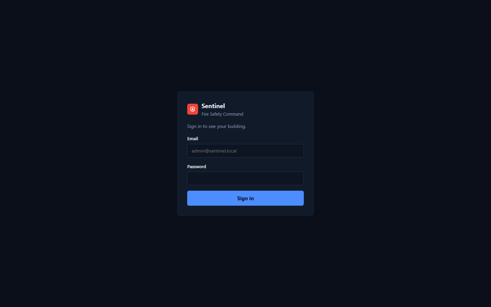
Tasveer: naya login page (test setup).
Login 8 ghante chalta hai. Phir dobara login karna hota hai.
3. Naya Look: Sidebar Aur Header Bar
Naya UI dark hai. Har halat rang + icon + lafz se dikhti hai, sirf rang se nahi:
| Rang | Matlab |
|---|---|
| Laal | Fire (aag) |
| Narangi | Smoke (dhuwan) |
| Hara | Safe / Normal |
| Peela | Attention / Degraded (dhyan dein, nigrani adhoori) |
| Grey | Offline / data nahi |
Sidebar (baen taraf)
| Group | Page | Kya hai |
|---|---|---|
| MONITORING | Overview | Building ka haal ek nazar mein (pehle "Dashboard") |
| Live Cameras | Saare camera aur AI ke boxes (pehle "Cameras") | |
| Floor Plan | Naqsha, raasta, aag ka risk, sensors (pehle "Building Map"). Andar Edit plan = naqsha editor | |
| Occupancy & Heatmap | NAYA: har kamre mein kitne log, exits par rush | |
| Incidents | Aag, dhuwan, sensor, crowd incidents. Laal badge = khule incidents ki ginti | |
| Sensors | Har sensor ki reading aur history | |
| Sprinklers | Zones aur relays | |
| Activity Log | Har waqia live | |
| Reports & Analytics | Ginti, graphs, model accuracy (pehle "Reports") | |
| CONFIGURATION | AI Settings | AI ka haal, sensitivity slider, photo test (pehle "AI Service"). Hara/laal nuqta = AI service chal rahi hai ya nahi |
| Notifications | NAYA: "Notifications & System Health": system ka haal, alert channels, Firebase | |
| Settings | Sirf Admin: cameras (pehle "Devices") |
Header bar (har page ke upar)
| Cheez | Kya karti hai |
|---|---|
| Page ka naam | Aap kis page par hain |
| Live / Connecting | Live updates ka link chal raha hai ya dobara jur raha hai |
| Ghari | Abhi ka waqt |
| Status chip | Misaal: hara sab theek, peela "ELEVATED RISK · 2 OPEN" (2 khule incidents), laal "CRITICAL ALERT". Peela "degraded" (jaise AI offline) ka matlab "aag nahi" nahi, balke "nigrani adhoori hai" |
| Emergency dispatch (laal) | Haath se alert bhejna (chapter 13) |
| Enable Alerts | Is browser mein alerts ki ijazat (chapter 20) |
| Mute / unmute | Alarm ki awaaz band/chalu |
| Avatar + naam + role | Kaun login hai (Admin/Operator) |
| Logout | Bahar nikalna |
Phone par
Phone par sidebar chhup jata hai. Upar baen ☰ dabayein: menu ek drawer ki tarah khulta hai. Tablet layout abhi target nahi (test nahi kiya).
| Phone: Overview | Phone: menu |
|---|---|
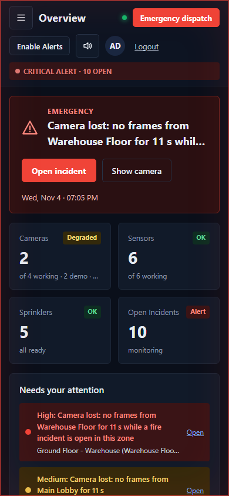 | 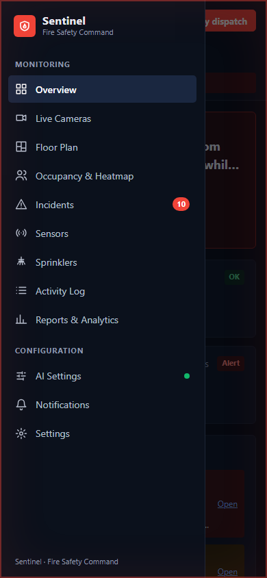 |
Tasveerein: simulated test data.
4. Overview: Building Ka Haal
Kahan: Sidebar → Overview (login ke baad pehla page).
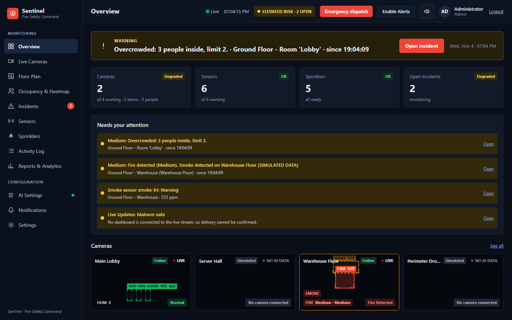
Tasveer: Overview, simulated test data.
| Hissa | Kya karta hai |
|---|---|
| Status banner | "Building is Safe" (hara) / "Warning" / "Emergency" + wajah + buttons (jaise incident kholna) |
| 4 cards | Cameras, Sensors, Sprinklers, Open Incidents. Har card par chip: OK / Degraded / Alert / Active / None |
| Needs your attention | Jin cheezon par abhi dhyan dena hai (khule incidents, offline camera, sensor alarm…) |
| Camera tiles | Cameras ki chhoti tasveerein; poori list Live Cameras par |
B · Setup: cameras, naqsha, calibration
5. Apne Cameras Daalna (Settings, Admin)
Kab: naya customer, ya naya camera laga. Kahan: Sidebar → Settings (sirf Admin; pehle iska naam "Devices" tha). Is page par ab sirf cameras hain; alert channels aur Firebase Notifications page par chale gaye.
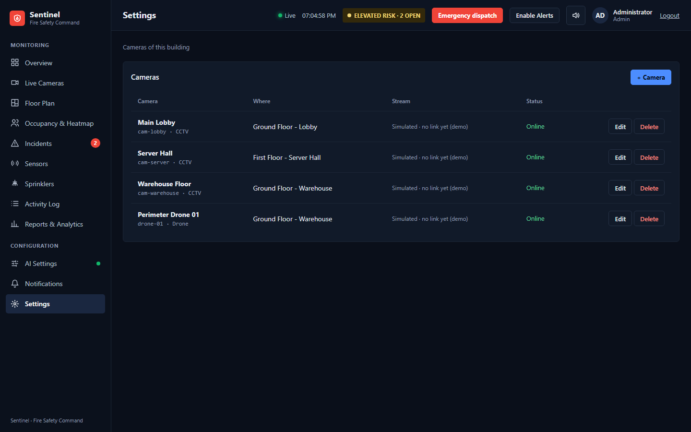
Tasveer: Settings, simulated test cameras.
- + Camera dabayein aur bharein:
| Field | Kya likhein |
|---|---|
| Id | Chhota pakka naam, jaise cam-gate (letters, digits, - ya _). Baad mein nahi badalta |
| Name | Screen wala naam, jaise "Main Gate" |
| Type | CCTV ya Drone |
| Zone | List se chunein. Naya zone sirf pehli dafa likhein, hamesha "Floor - Area": jaise "First Floor - Kitchen" (beech mein - zaroori, warna Save nahi hoga) |
| Stream link | Camera ka rtsp://user:pass@IP/..., MJPEG http://…/video (test camera, phone app), ya khali (simulated) |
| Browser video format | RTSP ke liye Simulated. MJPEG/HLS/MP4 link ho to wohi |
- Save. Camera foran Live Cameras aur Overview par aa jata hai.
Edit: camera ki line par Edit → badlein → Save. Link rtsp://***@… dikhe to waise hi chhod dein, purana password mehfooz rehta hai.
Delete: Delete → confirm. Purane incidents history mein rehte hain.
AI khud camera uthati hai: link wala camera save kiya to AI service 1 minute ke andar us ki video dekhna shuru kar deti hai.
⚠️ Asli CCTV/RTSP camera ke saath abhi NOT TESTED. Test sirf MJPEG test camera aur video file se hua.
Zone ke naam ka tareeqa: "Floor - Area"
| Misaal | |
|---|---|
| Ground Floor - Lobby | Neeche ki manzil, lobby |
| Ground Floor - Warehouse | Neeche ki manzil, godaam |
| First Floor - Server Hall | Pehli manzil, server hall |
| Basement - Parking | Tehkhana, parking |
⚠️ Zone ka khayal: aag lagne par usi zone ke sprinklers aur naqshe ke danger zones chalte hain. Camera, sensor aur naqsha ek hi zone naam use karein. List se chunne par spelling galat nahi hoti.
6. Naqsha Banana (Floor Plan → Edit plan)
Kahan: Sidebar → Floor Plan → Edit plan (editor).
A. Naya naqsha
- + New → "New floor plan" ban jata hai.
- Daen Plan settings: Name ("Ground Floor"), Building ("Warehouse"), Floor (0), Width aur Height meters mein (asal size, jaise 30 × 20).
- (Ikhtiyari) Upload image (PNG/JPG): apne naqshe ki photo background mein (5 MB tak). Ye sirf peeche dikhti hai, system is se deewarein khud nahi pehchaanta.
B. Cheezein draw karna
Toolbar se tool chunein aur naqshe par drag karein (ek khana = 1 meter):
| Tool | Kya hai | Tip |
|---|---|---|
| + Room | Kamra / hall | "Max people" de sakte hain (chapter 10) |
| + Corridor | Gallery | "Max people" de sakte hain |
| + Wall | Deewar (0.2 m moti) | Kamron ke beech |
| + Door | Darwaza | Deewar ke upar rakhein, warna raasta deewar paar nahi karega |
| + Exit | Bahar nikalne ka darwaza | Kam az kam ek zaroori. "Max people" de sakte hain |
| + Safe zone | Assembly point | Hara. "Max people" de sakte hain |
| + Danger zone | Khatarnak jagah (boiler, fuel store) | Laal |
| + Sensor | Sensor ka nishaan | Drag nahi, click karein jahan sensor laga hai (chapter 14) |
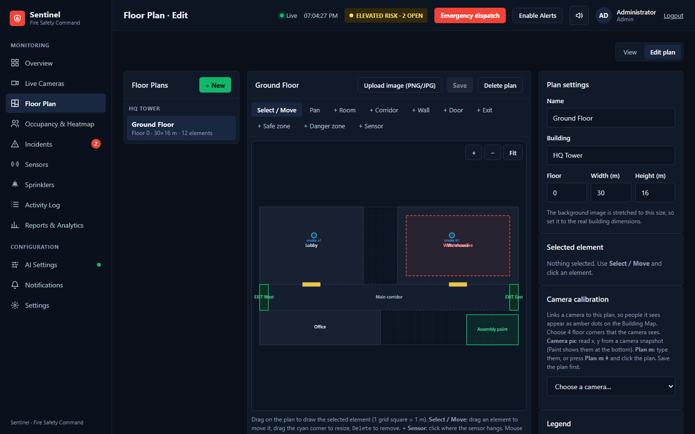
Tasveer: Edit plan (naqsha editor), simulated test naqsha.
C. Cheez badalna
- Select / Move → cheez par click.
- Daen Selected element: naam, X, Y, Width, Height (meters).
- Darwaza/Exit: Blocked / closed tick = band (raasta wahan se nahi guzarega).
- Danger zone: Active now (manual) (abhi khatra), ya Linked camera/sensor zone mein list se zone chunein (us zone mein incident khulte hi khud active).
- Room / Corridor / Safe zone / Exit: Max people (crowd alert) mein had likhein (chapter 10). Khali = koi had nahi.
- Hilana = drag (Select / Move tool). Chhota/bara karna = selected cheez ke neeche-daen cyan kona drag karein, ya daen Width / Height mein meters likhein. Mitana =
Deletekey.
D. Save
Save dabayein. Title par "unsaved" hat jaye. Zoom: mouse wheel ya + / − / Fit.
7. Camera Ko Naqshe Se Jorna (Calibration)
Faida: camera mein dikha insaan naqshe par khud nuqta ban jata hai. Isi se Occupancy (kamron mein log) aur crowd limits chalti hain. Bina calibration wale camera ke log naqshe par nahi aate.
- Floor Plan → Edit plan → naqsha kholein → Save.
- Daen Camera calibration → camera chunein.
- Camera ki snapshot Paint mein kholein. Farsh ke 4 kone chunein (koi 3 ek line mein na hon).
- Har kone ke liye:
- Camera px: Paint neeche jo x, y dikhata hai.
- Plan m ⌖ dabayein aur naqshe par wohi kona click karein.
- Save calibration.
Calibration panel upar wali editor tasveer (chapter 6) mein daen taraf hai. Camera hil jaye to dobara karein. Remove se hata sakte hain.
C · Roz ka istemaal
8. Floor Plan: Evacuation Raasta Aur Aag Ka Risk
Kahan: Sidebar → Floor Plan.
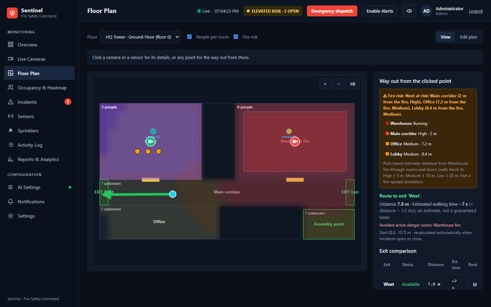
Tasveer: Floor Plan par raasta aur fire risk layer, simulated aag.
Raasta (way out)
- Upar list se naqsha chunein.
- Naqshe par wahan click karein jahan insaan hai, ya kisi insaan ke nuqte par.
- Hari line qareeb tareen mehfooz exit tak. Saath mein: faasla (m), chalne ka waqt (andaza), exits ka muqabla, aur rescue list (khatre mein log).
| Halat | Kya dikhega |
|---|---|
| Aag (danger zone active) | Raasta khud badal kar aag se door (danger zone se nahi guzarta) |
| Koi raasta nahi | "No safe route…" (har exit band, khatre mein ya pohanch se bahar) |
Waqt sirf andaza hai (faasla ÷ chalne ki raftaar).
Layers (checkboxes)
| Layer | Kya dikhata hai |
|---|---|
| People per room | Jamni (purple) rang: kis kamre mein kitne log (chapter 9) |
| Fire risk | Aag ka risk: agle kaun se kamre khatre mein |
Aag ka risk (Fire risk layer)
Kab dikhta hai: jab naqshe ka koi danger zone active ho (zone mein incident khula ho).
| Rang | Matlab |
|---|---|
| Gehra laal | Aag yahin hai |
| Laal | ≤ 5 m (High) |
| Narangi | ≤ 10 m (Medium) |
| Peela | ≤ 20 m (Low) |
| Bina rang | Door, ya deewar ke peeche (darwaza nahi) |
Incident Resolve karein to risk khud hat jata hai. Ye rule-based andaza hai (darwazon ke raaste faasla), aag ka asli simulation nahi.
Naqshe par sensor icons bhi hote hain (chapter 14) aur camera ke nishaan.
9. Occupancy & Heatmap (Kamron Mein Log)
Kahan: Sidebar → Occupancy & Heatmap (naya page). Pehle ye ginti Floor Plan par thi.
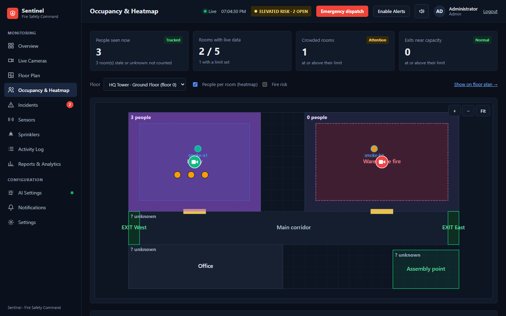
Tasveer: Occupancy & Heatmap, simulated log.
Kaise kaam karta hai: AI camera mein insaan dekhti hai. Jo banda kam az kam 3 frames tak track ho, use camera calibration (chapter 7) ke zariye naqshe par rakha jata hai aur phir gina jata hai ke wo kis kamre mein hai.
Upar 4 cards
| Card | Matlab |
|---|---|
| People seen now | Live data wale kamron mein abhi kitne log. Stale/unknown kamre is mein nahi gine jate |
| Rooms with live data | Kitne kamron ka data taaza hai (misaal 3 / 5) |
| Crowded rooms | Kitne kamre apni had se upar |
| Exits near capacity | Kitne exits par had ke barabar ya zyada log ja rahe hain |
Heatmap
Naqshe par jamni (purple) rang: jitna gehra, utne zyada log. Ye logon ka heatmap hai, aag ke risk se alag. Is page par Fire risk layer shuru mein band hoti hai (checkbox se chalu kar sakte hain).
"People per room" table
| Halat | Matlab |
|---|---|
| Live | Camera abhi frames bhej raha hai, ginti taaza hai |
| Stale | Camera ka aakhri frame 10 second se purana. Aakhri ginti dikhti hai, lekin wo purani hai |
| Unknown | Is kamre ko koi (calibrated) camera nahi dekhta |
⚠️ Kabhi nakli 0 nahi: jahan data nahi, wahan "Unknown" likha aata hai, "0 log" nahi. "Unknown" ka matlab "kamra khaali" nahi.
Do camera ek kamre par: system nahi jaanta ke dono camera wahi log dekh rahe hain ya alag (cross-camera pehchaan nahi). Is liye ginti = sab se bari ginti, aur saath mein ek range (zyada se zyada = dono ka jor). Misaal: camera A 3 log, camera B 2 log → ginti 3, lekin 5 tak ho sakte hain.
"Crowd at the exits" table
Har exit ki taraf kitne log ja rahe hain, us ki had, halat, aur mashwara (jaise "Send people to exit 'West'", ya "No safe alternative route"). Tafseel chapter 10 mein.
10. Crowd Limits Aur Crowd Incidents
Had (limit) kaise lagayein
- Floor Plan → Edit plan → Select / Move → koi Room, Corridor, Safe zone ya Exit chunein.
- Daen Max people (crowd alert) mein number likhein (misaal 30).
- Save.
Had paar hone par kya hota hai
| Halat | Kya hota hai |
|---|---|
| Kamre / exit par had se zyada log | Ek "Crowd" incident khulta hai (darja Medium). Message misaal: "Overcrowded: 4 people heading there, limit 3. Send people to exit 'West'" |
| Koi mehfooz doosra exit nahi | Darja High, message "No safe alternative route…". Raaste par "No safe route" bhi aa sakta hai |
| Log wapas had ke andar | Crowd incident khud band (resolve) ho jata hai |
| Data Stale ya Unknown | Na naya incident khulta hai, na purana band hota hai (purane data par faisla nahi) |
Doosra exit (alternative): system qareeb ka doosra exit batata hai jo band na ho aur aag/dhuwan ke danger zone mein na ho. Aisa koi na mile to wo saaf "No safe alternative route" kehta hai, galat raasta nahi deta.
Crowd incidents Incidents page aur Reports ("by source: Crowd") mein dikhte hain.
Ginti sirf utni hi achhi hai jitne camera aur calibration. Camera ke andhe hisson ke log nahi gine jate.
11. Live Cameras Aur AI
Kahan: Sidebar → Live Cameras.
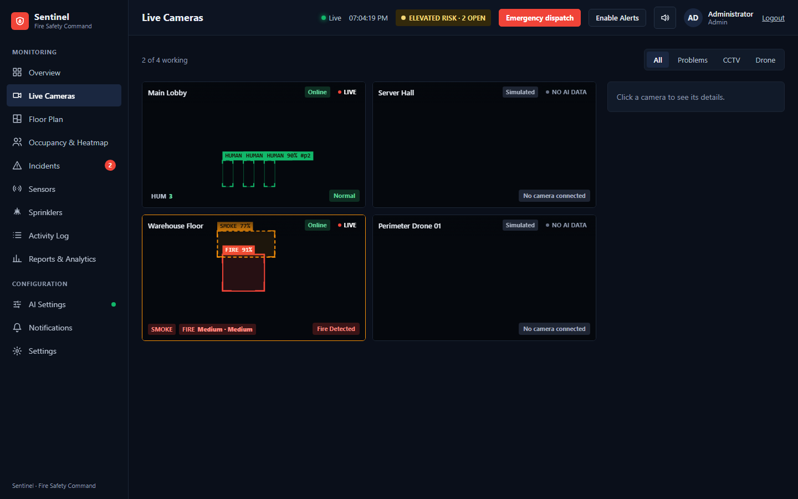
Tasveer: Live Cameras, simulated test cameras.
| Cheez | Matlab |
|---|---|
| LIVE / NO AI DATA | AI se frames aa rahe hain / nahi aa rahe |
| Laal solid dabba | Aag |
| Narangi dashed (toota hua) dabba | Dhuwan |
| Hara dabba | Insaan |
| SIM DATA | Test (simulated) data |
- Filters: All / Problems / CCTV / Drone ("Problems" = sirf jin cameras mein masla hai).
- Camera par click: us ki tafseel.
12. Incidents: Aag Aur Dhuwan Alag
Kahan: Sidebar → Incidents (page ka title "Incident Management"). Sidebar ka laal badge = kitne incidents khule hain.
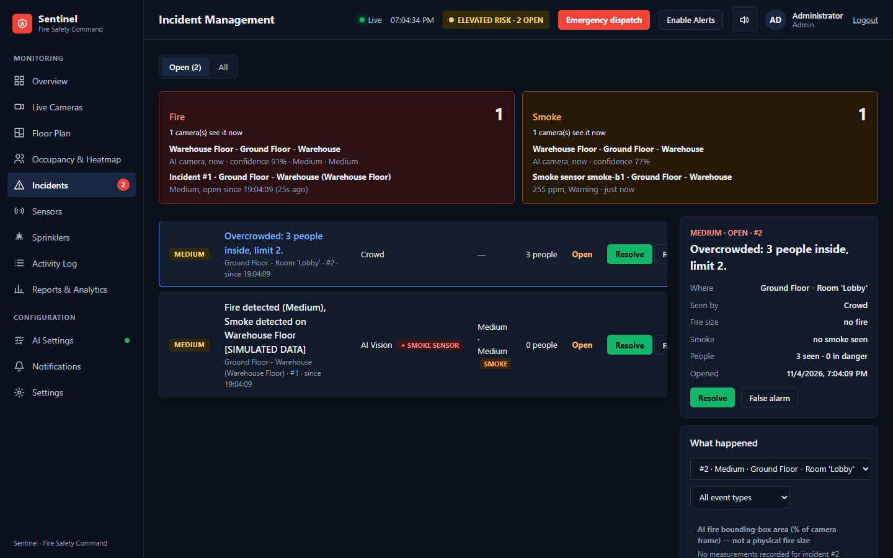
Tasveer: Incidents, simulated aag aur dhuwan.
Incident kab banta hai: camera par aag ya dhuwan, sensor ki had paar, crowd had paar, camera lost, ya Emergency Dispatch.
Aag aur dhuwan
| Camera ne kya dekha | Kya hota hai |
|---|---|
| Sirf dhuwan | Apna alag incident, list mein SMOKE tag |
| Sirf aag | Apna alag incident |
| Ek hi camera par aag + dhuwan | Ek hi incident (do nahi), "smoke detected" bhi likha |
Upar Fire aur Smoke cards alag ginti dikhate hain.
List aur tafseel
- Har line: darje ki chip (Low → Medium → High → Critical), SMOKE tag (agar ho), jagah, source.
- Resolve = incident band. False alarm = band, aur ghalat alarm ke tor par likha jata hai.
- Incident par click: aag ka size, dhuwan, log, waqt.
- "What happened" history, filters ke saath: Opened, Escalated, FireMeasurement (aag ka % aur confidence), SmokeMeasurement (dhuwan ka area % aur sab se oonchi confidence), PersonInDanger, EvacuationRoute, Notification, Resolved. Test data par SIMULATED, raaste par ESTIMATE.
- Link
/incidents?incident=<id>seedha wohi incident kholta hai (push notification par click yahin le jata hai).
Alarm
| Cheez | Kya hota hai |
|---|---|
| Alarm | Koi bhi incident khula ho to lagatar bajta hai |
| Alarm band | Incident Resolve karein, ya header ka mute button |
| Popup | High/Critical par laal popup |
Emergency (High/Critical, ya insaan khatre mein): SMS, WhatsApp, Telegram, Email (jo configure hon) aur Auto sprinklers. Har naya confirmed aag/dhuwan incident Firebase push bhi bhejta hai (agar configure ho). Chapter 20.
13. Emergency Dispatch (Haath Se Alert)
- Header mein laal Emergency dispatch.
- Zone, Severity, Message (jaise "Warehouse khaali karein").
- Sprinklers bhi chahiye to "Activate all sprinklers in this zone" tick.
- Dispatch Now: foran configure kiye gaye channels par alert aur ek naya incident.
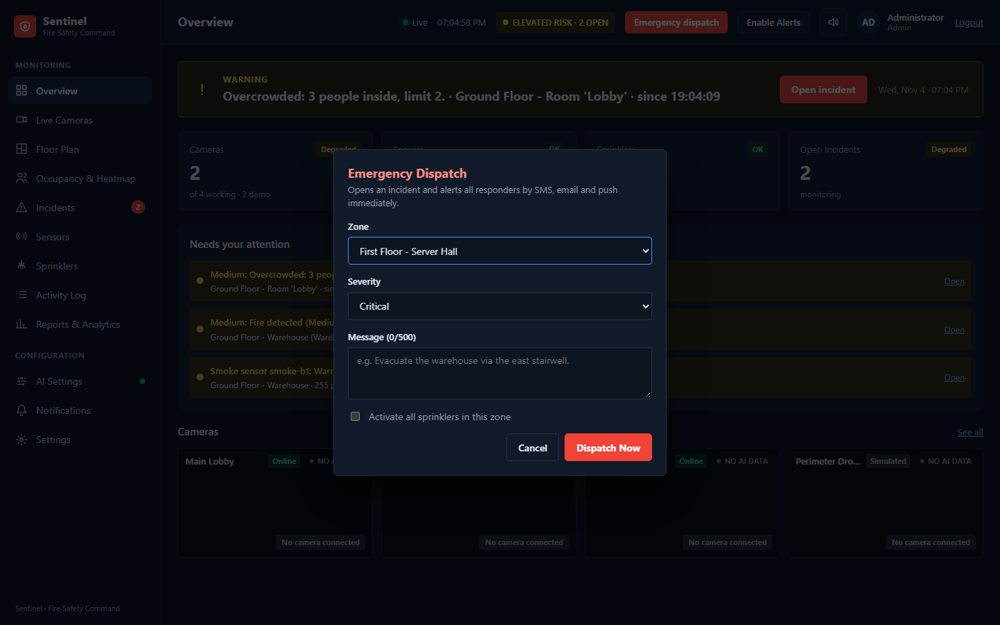
Tasveer: Emergency dispatch dialog, test setup.
14. Sensors (Naqshe Par Bhi)
Kahan: Sidebar → Sensors.
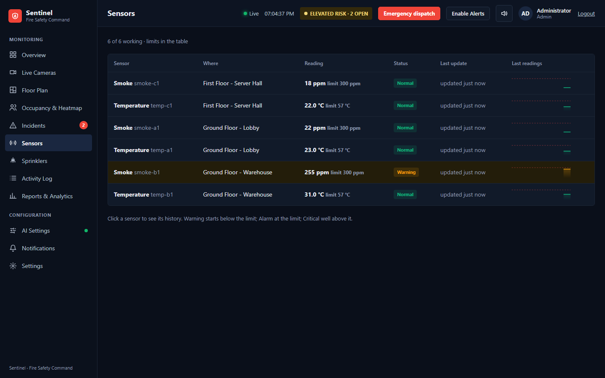
Tasveer: Sensors, simulated sensors.
Table: reading, limit, halat, aakhri update, chhota graph. Sensor par click = us ki history.
| Halat | Matlab |
|---|---|
| Normal (hara) | Theek |
| Warning (peela) | Limit ke qareeb (80% tak) |
| Alarm | Limit paar: High incident + Auto sprinklers |
| Critical | Bohat zyada: Critical incident + emergency alerts |
| Not reporting / Stale | Sensor se taaza reading nahi aa rahi (is ka matlab "theek" nahi) |
Sensor ko naqshe par rakhna
- Floor Plan → Edit plan → + Sensor.
- Naqshe par wahan click karein jahan sensor laga hai. Naam khud pehle aise sensor ka aata hai jo abhi naqshe par nahi.
- Daen panel mein naam = sensor ka Id (bilkul wahi), warna rang nahi badlega → Save.
Floor Plan par sensor ka icon live halat ka rang leta hai: hara Online, peela Warning, grey Stale/Offline, laal Active alert.
⚠️ Asli sensors / gateways ke saath NOT TESTED: sirf simulator ke nakli sensors se test hua.
15. Sprinklers
Kahan: Sidebar → Sprinklers: zones aur relays.
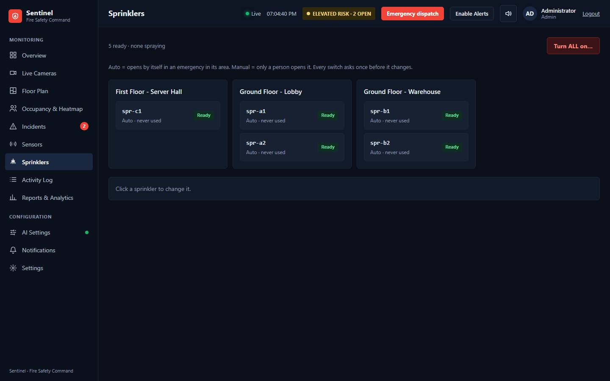
Tasveer: Sprinklers, simulated relays.
| Cheez | Kaam |
|---|---|
| Switch | Ek relay ON/OFF |
| Auto | System aag par khud chala sakta hai |
| Manual | Sirf aap chalayenge |
| Master | Saare ek saath ON/OFF (confirm ke baad) |
⚠️ Relay ON karna asli kaam hai: agar asli sprinkler/valve jura ho to paani chal jayega. Test ke waqt sirf simulator ya bina pani wala setup. Asli relays ke saath NOT TESTED.
Sprinkler khud OFF nahi hota: aag ke baad aap OFF karein.
16. Activity Log
Kahan: Sidebar → Activity Log. Har waqia live aata hai: incident khula, alert gaya, sprinkler chala, camera lost, setting badli… Upar filters se chhantein.
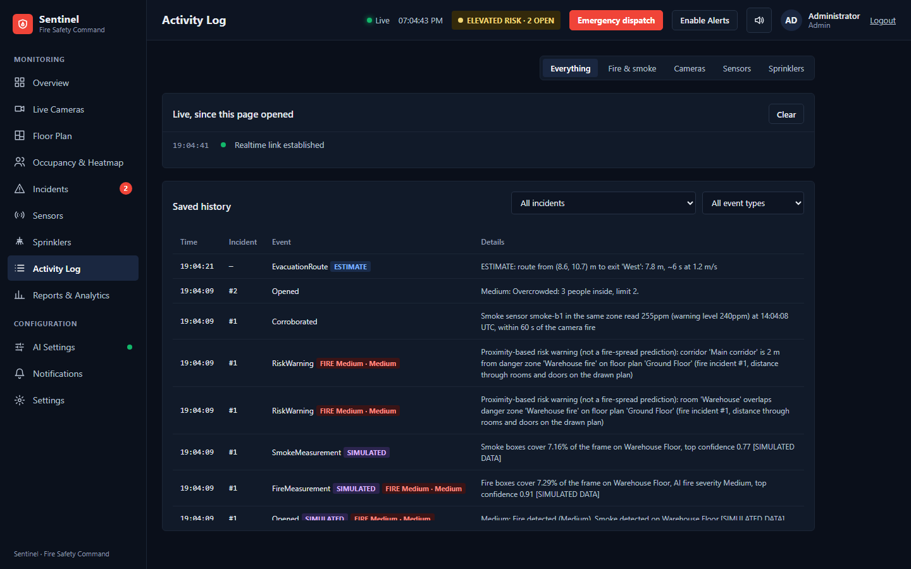
Tasveer: Activity Log, simulated waqiat.
17. Reports & Analytics Aur Model Accuracy
Kahan: Sidebar → Reports & Analytics.
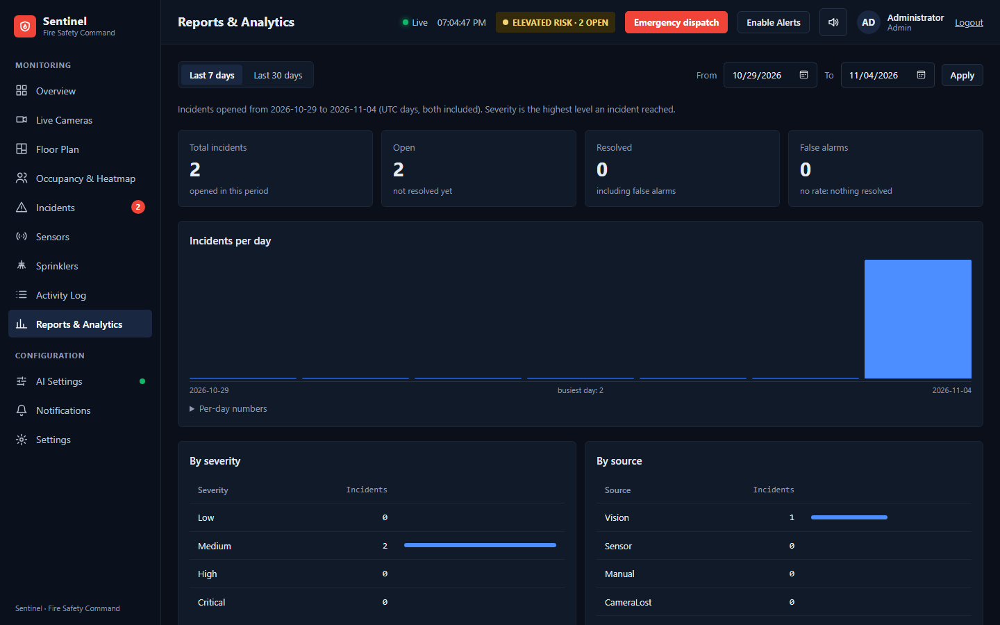
Tasveer: Reports, simulated incidents.
- Date range: 7 din, 30 din, ya apni tareekhein.
- Totals, har din ka graph, darje ke hisaab se (by severity), source ke hisaab se (by source: camera, sensor, dispatch, Crowd…).
⚠️ Incidents ki ginti accuracy nahi hai. "30 incidents" se ye pata nahi chalta ke AI kitni sahi hai. Accuracy sirf neeche wale hisse se.
Model accuracy (offline evaluation against labelled images)
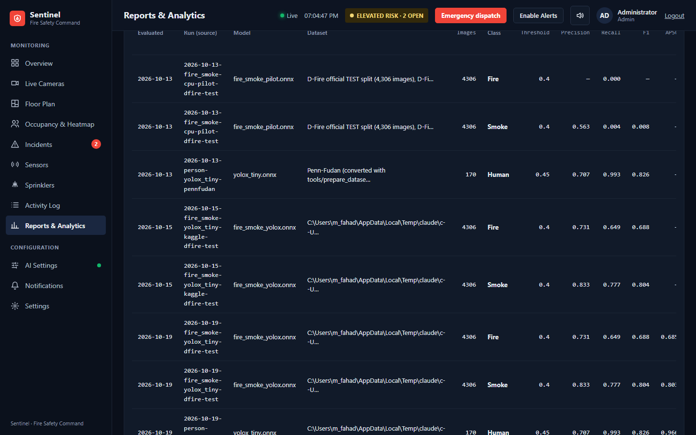
Tasveer: model accuracy hissa (test setup ki evaluation reports).
Ye hissa batata hai ke AI ko pehle se label ki hui tasveerein (jin mein insaan ne bata diya ke aag/dhuwan kahan hai) dikha kar kitne sahi jawab mile. Ye live cameras se nahi, offline test se hai.
| Lafz | Aasan matlab |
|---|---|
| Precision | AI ne jitni dafa "aag" kaha, un mein se kitni dafa sach mein aag thi. Oonchi = kam false alarm |
| Recall | Jitni asli aag thi, un mein se AI ne kitni pakri. Oonchi = kam aag chhooti |
| F1 | Precision aur recall ka mila jula ek number (dono achhe hon tabhi ooncha) |
| AP50 | Dabba (box) kitni achhi jagah laga: box asli label se kaafi milta ho (IoU ≥ 0.5) tab sahi gina jata hai |
| TP (true positive) | Aag thi, AI ne kaha aag. Sahi |
| FP (false positive) | Aag nahi thi, AI ne kaha aag. False alarm |
| FN (false negative) | Aag thi, AI ne nahi pakri. Chhoot gayi (sab se khatarnak) |
| TN (true negative) | Aag nahi thi, AI ne bhi nahi kaha. Sahi |
| Image accuracy | Kitni tasveeron par (TP + TN) jawab sahi tha |
Har evaluation run ki line: tareekh, source folder, dataset, tasveeron ki ginti, aur har class (fire, smoke, person) ke numbers. Synthetic stress runs (wahi tasveerein andhera/dhund jaisa bigaar kar) alag band list mein hain: click karke kholein.
Naya run kaise aata hai: ai-service\tools\evaluate.py ko --out ke saath ai-service\reports ke andar kisi folder mein chalayein (setting AiService__EvaluationDirectory). Jo report.json wahan banta hai, Reports page par khud aa jata hai. Tareeqa: Project guide v5, chapter 27.
Misaal (D-Fire ki 4,306 test tasveerein, threshold 0.40, image-level): Fire P 0.982, R 0.932, F1 0.956; Smoke P 0.968, R 0.923, F1 0.945. Ye ek dataset par hai; asli building ke cameras par numbers kam ya zyada ho sakte hain.
18. AI Settings: Sensitivity Slider Aur Photo Test
Kahan: Sidebar → AI Settings (pehle "AI Service"). Sidebar mein hara nuqta = AI service chal rahi hai, laal = band. System health ab yahan nahi, Notifications page par hai.
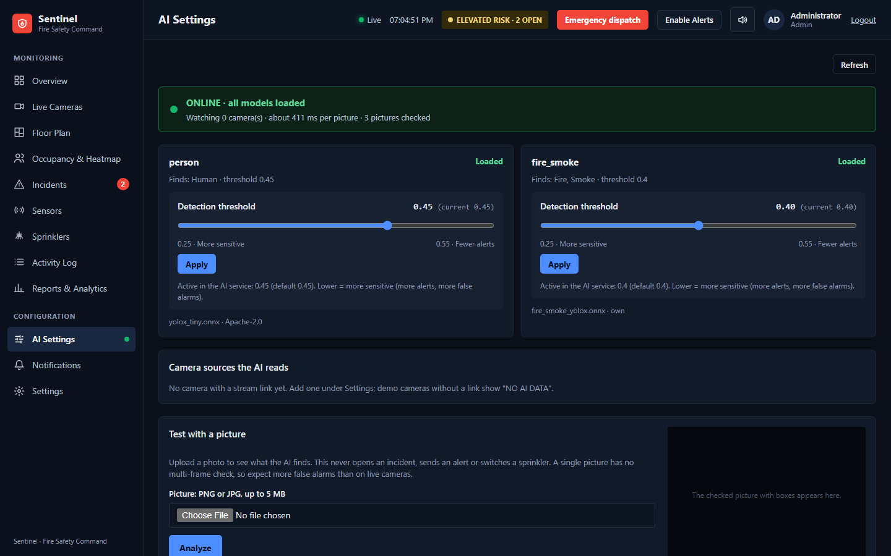
Tasveer: AI Settings aur sensitivity slider, test setup.
Detection threshold (sensitivity slider)
- Har model card (fire_smoke, person) par Detection threshold slider: 0.25 se 0.55 (0.01 ke qadam). Hilate hi value dikhti hai, saath "(current x)" = abhi chal rahi value.
- Apply dabayein (sirf Admin; Operator sirf dekh sakta hai).
- Page par sirf wohi value "active" dikhti hai jo AI service ne confirm ki. Confirm na ho to purani hi dikhegi.
| Value | Asar |
|---|---|
| Kam (jaise 0.30) | Zyada sensitive: chhoti/dhundli aag bhi pakre, lekin zyada false alarm |
| Zyada (jaise 0.50) | Kam false alarm, lekin kuch asli aag chhoot sakti hai |
| Default | fire_smoke 0.40, person 0.45 |
Value ai-service\models\thresholds.local.json mein save hoti hai, is liye restart ke baad bhi rehti hai (models.json nahi badalti). Har badlaao Activity Log / history mein SettingChanged ke tor par likha jata hai (kis ne, kab).
⚠️ Bina wajah threshold na badlein. Badalne ke baad Reports wali accuracy purani value ki hai, nayi value ke liye evaluation dobara chalani hogi.
Test with a picture
- Test with a picture hisse mein aag/dhuwan ya insaan wali photo chunein (JPG/PNG, 5 MB tak).
- Photo par dabbe aur table: Found, Sure (confidence), Box, aur Why (AI ne kyun kaha).
Ye sirf preview hai: koi incident, alert ya sprinkler nahi chalta. Isi page par camera sources bhi dikhte hain.
19. False Alarm Filtering (Kya Kar Sakti Hai, Kya Nahi)
Ghalat alarm kam karne ke liye system ye karta hai:
- Threshold: AI ki confidence slider wali had (chapter 18) se kam ho to ignore.
- 3 frame ki tasdeeq: ek frame mein aag dikhna kaafi nahi; lagatar kuch frames mein dikhe tab incident.
- Tracking (IoU): wohi aag frame-dar-frame wohi gini jati hai, har frame naya alarm nahi.
Aur rules kyun nahi lagaye: hum ne 4,306 label ki hui D-Fire tasveeron par extra rules aazmaye (box ka kam az kam size, oonchi confidence, "aag sirf dhuwan ke saath"). Har rule ne jitne false alarm hataye, us se zyada asli aag chhor di. Is liye koi nahi lagaya. Tafseel: ai-service\reports\2026-11-04-false-alarm-review\review.json (tool ai-service\tools\false_alarm_eval.py).
| ✅ Kar sakti hai | ❌ Nahi kar sakti / pata nahi |
|---|---|
| Ek-do frame ki jhalak (flicker) par alarm na dena | Har laal/narangi cheez ko aag se 100% alag karna |
| Wohi aag ko bar bar naya incident na banana | Ghuroob-e-aaftab (sunset), bhaap (steam), vape ka dhuwan, laal batti: asli footage par NOT TESTED (status PARTIAL) |
| Slider se sensitivity kam/zyada karna | Zero false alarm ki guarantee |
Ghalat alarm aaye to Incidents par False alarm dabayein, taake record rahe.
20. Notifications & System Health
Kahan: Sidebar → Notifications (naya page). Pehle system health AI page par aur alert channels Devices par the; ab sab yahan hai.
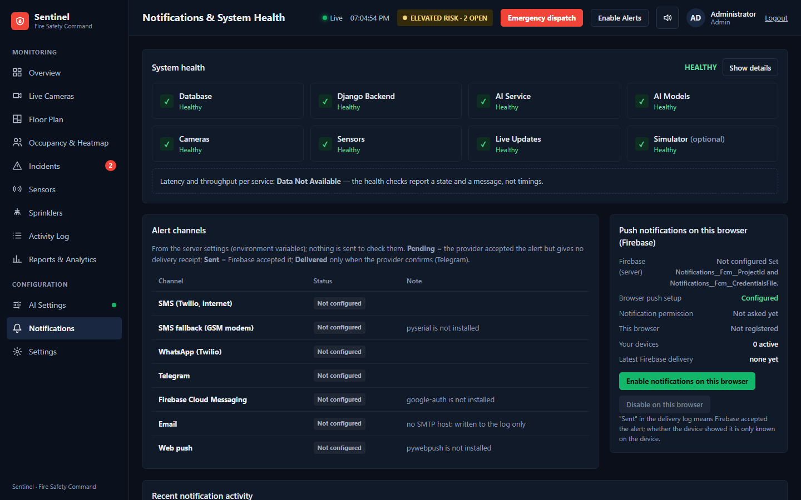
Tasveer: Notifications & System Health, test setup (koi asli message nahi bheja gaya).
System health cards
Cards: Database, Django Backend, AI Service, AI Models, Cameras, Sensors, Live Updates, Simulator. Ye har 10 second server se taaza aate hain (live, pehle se likhe hue nahi). Show details se tafseel. Har service ki latency abhi "Data Not Available" dikhti hai.
Alert channels table
Channels: SMS (Twilio), GSM modem SMS (backup: sirf jab Twilio SMS fail ho ya configure na ho), WhatsApp (Twilio), Telegram (bot; MJPEG camera ho to photo ke saath), Firebase push, Email, Web Push. Har channel ki halat: Configured / Not configured / Disabled + wajah. Settings .env mein hoti hain (naam .env.example mein; secrets kabhi commit na karein).
Recent notification activity: lafzon ka matlab
| Lafz | Matlab |
|---|---|
| Delivered | Pohanch gaya, aur saamne wale ne confirm kiya (abhi sirf Telegram confirm karta hai) |
| Pending | Twilio ya GSM ne le liya, lekin pohanchne ki tasdeeq nahi |
| Sent | Firebase ne le liya (phone/browser tak pohanchne ki tasdeeq nahi) |
| Failed | Nahi gaya. Poori tarah fail channel 30 second baad ek dafa dobara koshish karta hai |
| Invalid token | Browser/device ka Firebase token purana ya ghalat |
| Disabled | Settings maujood hain lekin chal nahi sakta (jaise google-auth / pyserial / pywebpush install nahi, ya SMTP host khali) |
| Not configured | .env mein is channel ki settings hi nahi |
Har koshish incident ki history mein (Notification) bhi likhi jati hai. Ek hi incident + darje ke liye dobara wohi message nahi jata. Har naya confirmed aag/dhuwan incident Firebase push bhejta hai; SMS / WhatsApp / Telegram / Email sirf emergency (High/Critical ya insaan khatre mein) aur Emergency dispatch par.
Push notifications on this browser (Firebase)
- Is panel mein Enable notifications on this browser dabayein. Browser ijazat sirf isi click par poochta hai → Allow.
- Band karna ho to Disable on this browser.
- Push par click → seedha wohi incident (
/incidents?incident=<id>). MJPEG camera ho to push mein snapshot ka link (24 ghante chalta hai, aur sirf us device se khulta hai jahan se dashboard ka address khul sake).
⚠️ Server par Firebase ke liye
google-authinstall chahiye (sentinel-django\.venv\Scripts\python -m pip install google-auth) aur.envmeinNotifications__Fcm__…settings. Firebase ki service-account JSON file project folder ke bahar rakhein.NOT TESTED: asli Firebase, Twilio SMS/WhatsApp, Telegram, Email (SMTP) delivery, aur GSM modem hardware. Mobile app maujood nahi (token API tayyar hai).
Header ka "Enable Alerts"
Header mein Enable Alerts → browser poochhe to Allow. Phir High/Critical incident par Windows ke kone mein notification aata hai. Server push na ho to ye sirf tab tak chalta hai jab dashboard khula ho. Server Web Push ke liye .env mein Notifications__WebPush__… keys aur pywebpush chahiye.
21. Camera Lost
Koi camera (jo frames bhej raha tha) 10 second chup ho jaye, jaise aag mein bijli chali gayi:
- Incidents mein "Camera lost: no frames from … for 10 s" (source Camera lost).
- Us zone mein aag ka incident khula ho to High, warna Medium.
- Us camera ke kamre Occupancy par Stale ho jate hain.
- Camera wapas aaye to Activity Log: "Camera … is sending frames again". Phir incident Resolve kar dein.
D · Demo, database, yaad rakhne wali baatein aur tools
22. Demo Chalana (Simulator Aur Live Camera)
Asli aag ke baghair demo:
.\start.ps1 -Simulator
Ya alag window mein:
cd C:\Users\m_fahad\Desktop\Project\sentinel-django
.\.venv\Scripts\python tools\simulator.py --device-key <.env ka Device__ApiKey> --sensor-key <.env ka Device__SensorApiKey> --ignite "Ground Floor - Warehouse"
Cameras par nakli insaan aur Ground Floor - Warehouse mein aag. Alarm, alerts, sprinklers aur risk heatmap sab chalte hain. Har cheez par SIM DATA likha hota hai.
⚠️
.envmein asli SMS/WhatsApp/Telegram/Email/Firebase settings hon to demo asli alerts bhej dega. Pehle Safe Test Mode (user guide, chapter 4).
Sab se aasan: automatic test (ek command)
Ye command khud sab karti hai: aag ki video chalati hai, camera aur naqsha banati hai, AI ke incident ka intezar karti hai, raasta badalna, dhuwan aur kamre ki ginti check karti hai, aur aakhir mein PASS/FAIL ki list deti hai.
- Safe Test Mode lagayein (user guide, chapter 4). Ye na ho to script khud ruk jati hai.
- Sab chalayein:
.\start.ps1(simulator nahi). - Nayi PowerShell window:
cd C:\Users\m_fahad\Desktop\Project\ai-service
.\.venv\Scripts\python tools\live_test.py
- Taqreeban 1–2 minute mein kuch aisa aayega (numbers alag ho sakte hain):
PASS camera cam-live saved (Devices): 201
PASS floor plan 'Live Test' saved: 201
PASS camera calibrated to the plan: 200
PASS route before the fire: West exit, 5.26 m, ~4.4 s
PASS AI opened a fire incident: #1 Low after 54 s
PASS danger zone active: Lobby fire
PASS route avoids the fire: East exit, 13.25 m
PASS fire risk heatmap active: ...
PASS AI smoke measured separately: ...
PASS room occupancy live from the camera: ...
10/10 checks passed.
(Script ki pehli line mein "Devices" likha hai: ye purana naam hai, page ab Settings hai.)
- Dashboard par dekhein: Live Cameras par Live Test tile, Incidents mein incident, alarm, aur Floor Plan par Live Test naqsha chun kar raasta.
- Dekh liya to us window mein Ctrl+C: camera, naqsha aur test incident khud saaf ho jate hain.
| Agar ye aaye | Matlab |
|---|---|
STOP: .env has real SMS/Email settings | Pehle Safe Test Mode, phir server dobara chalayein |
STOP: the API / AI service is not running | .\start.ps1 chalayein |
FAIL AI opened a fire incident | Supervisor window dekhein; device key (start.ps1 deta hai) zaroori hai |
Apni video:
tools\live_test.py --video C:\videos\aag.mp4. Video mein log hon to AI unhein bhi P1, P2 ke saath track karegi.
Haath se poora live test: asli video, banda track, naqsha, raasta, aag
Is test mein sab kuch ek saath dikhta hai: camera tile par video, AI ke boxes aur P1, P2 jaise track number, naqshe par chalta hua nuqta, kamre ki ginti, evacuation raasta, aur aag lagne par raasta badalna.
⚠️ Ye asli camera ki tarah chalta hai (SIM DATA nahi), is liye alerts aur sprinklers asli chalte hain. Pehle Safe Test Mode zaroor lagayein.
Qadam 1: Sab chalayein
cd C:\Users\m_fahad\Desktop\Project
.\start.ps1
(Simulator na chalayein, warna nakli aag mix ho jayegi.)
Qadam 2: Test camera chalayein (nayi PowerShell window)
cd C:\Users\m_fahad\Desktop\Project\ai-service
.\.venv\Scripts\python tools\mjpeg_camera.py 0
0= laptop ka webcam: aap khud camera ke saamne chalein.- Ya webcam ki jagah video file:
tools\mjpeg_camera.py C:\videos\log-chal-rahe.mp4(loop mein chalti hai). - Window mein likha aayega:
Test camera on http://127.0.0.1:8090/video. Ye window khuli rakhein.
Mobile se (ikhtiyari): Android par "IP Webcam" app → Start server → link hoga http://<phone-IP>:8080/video. Phone aur laptop ek hi WiFi par hon.
Qadam 3: Camera daalein
Admin login → Settings → + Camera:
| Field | Likhein |
|---|---|
| Id | cam-live |
| Name | Live Test |
| Zone | Ground Floor - Lobby (list se) |
| Stream link | http://127.0.0.1:8090/video (ya phone wala link) |
| Browser video format | Mjpeg |
Save → Live Cameras. Tile par foran video, aur 1 minute ke andar AI ke hare dabbe P1 ke saath.
Qadam 4: Naqsha banayein
Floor Plan → Edit plan → + New → 20 × 10 m:
- + Corridor: poori lambai (0, 3 se 20 × 4).
- + Exit baen kinare (West), aur ek daen kinare (East).
- + Danger zone West exit ke qareeb → Linked zone list se
Ground Floor - Lobby→ Save. - (Ikhtiyari) Corridor ki Max people = 1, taake crowd incident bhi dekh sakein (chapter 10).
Qadam 5: Calibration
Edit plan → Camera calibration → cam-live. Camera ki tasveer mein farsh ke 4 kone chunein aur naqshe par wohi 4 jagah click karein (chapter 7) → Save calibration.
Qadam 6: Raasta aur ginti dekhein
Floor Plan → naqsha chunein. Camera ke saamne chalein: naqshe par nuqta chalega. Nuqte par click → hari line West exit tak. Occupancy & Heatmap par Corridor "Live" aur ginti 1.
Qadam 7: Aag
Webcam ke saamne phone par aag ki video chalayein (ya Qadam 2 mein aag wali video file dein). Ya Emergency dispatch → Zone Ground Floor - Lobby.
✅ Kya dikhna chahiye
- Live Test tile par video chal rahi hai
- Banda hare dabbe mein, P1 track number ke saath; chalne par bhi P1 hi rahe
- Floor Plan par nuqta banda ke saath hilta hai
- Nuqte par click → hara raasta + faasla aur waqt
- Aag par: alarm bajay, Incidents mein incident, danger zone laal
- Raasta khud East exit par chala jaye
- Floor Plan par Fire risk ke rang
- Incident Resolve → alarm band, risk hat jaye
- Occupancy & Heatmap par Corridor Live, aur camera band karne ke 10 s baad Stale
Band karna: test camera window mein Ctrl+C, phir Settings se cam-live Delete (warna "Camera lost" alert aayega).
Pehle wale version mein automatic test 3 dafa chala kar dekha (test database par): 8/8 pass. Haath wale test mein AI ne camera khud uthaya, banda P1 115 frames tak wahi id raha, raasta pehle West 5.6 m, aag ke baad East 12.9 m. Laptop webcam (
0) wala hissa hum nahi chala sake.
23. Database Doosre PC Par Le Jana
| Kab | Command |
|---|---|
| Kaam khatam | .\database\save.ps1 → git add -A → git commit -m "kaam" → git push |
| Doosre PC par shuru | git pull → .\database\load.ps1 → "yes" |
load.ps1 database na ho to bana deta hai, ho to local SentinelDb ko poora badal deta hai (SQL Server 2022 ya naya chahiye). Ek waqt mein ek hi PC par kaam karein. SentinelDb par kabhi manage.py migrate na chalayein.
Bilkul naya PC? Poora setup (Python 3.13, SQL Server 2022, ODBC Driver 18,
.\setup.ps1,.envbharna, phirload.ps1ya khali database ke liyecreate_schema, phir.\start.ps1) User guide (FIREVISION_AI_USER_GUIDE_ROMAN_URDU.html, chapters 2–3) mein qadam ba qadam hai.
24. Yaad Rakhne Wali Baatein
| ✅ Karein | ❌ Na karein |
|---|---|
| Demo se pehle purane incidents Resolve karein (warna alarm bajta rahega) | Ise asli fire alarm ki jagah lagana |
| Camera, sensor aur naqshe mein ek hi zone list se chunein | Camera ka Id badalna (AI isi se frames bhejti hai) |
| Camera hile to calibration dobara | Camera password, .env ya Firebase JSON chat ya git mein daalna |
| Test se pehle Safe Test Mode | Asli sprinkler/alarm bina ijazat jorna |
| Occupancy par "Unknown"/"Stale" ko "khaali" na samjhein | Incidents ki ginti ko AI ki accuracy samajhna |
| Threshold badal kar uska asar Reports / test se dekhein | NOT TESTED cheezon (asli CCTV, sensors, relays, SMS/WhatsApp/Telegram/Firebase, GSM) par bharosa karna |
25. Tools: Kab Kaunsa Chalayein
| Aap ko kya karna hai | Tool | Command |
|---|---|---|
| Naye PC par setup | setup.ps1 | .\setup.ps1 (User guide) |
| Sab kuch chalana / band karna | start.ps1 / stop.ps1 | .\start.ps1 · .\stop.ps1 |
| Aag ka nakli demo | Simulator | .\start.ps1 -Simulator |
| Laptop webcam ko camera banana | mjpeg_camera.py | cd ai-service; .\.venv\Scripts\python tools\mjpeg_camera.py 0 |
| Ek command mein poora test | live_test.py | cd ai-service; .\.venv\Scripts\python tools\live_test.py |
| Database doosre PC par | save.ps1 / load.ps1 | chapter 23 |
| Purane zone naam badalna | rename-zones.sql | sqlcmd -S localhost -E -C -d SentinelDb -i database\rename-zones.sql |
| AI ki accuracy naapna (Reports par aata hai) | evaluate.py | Project guide, chapter 27 |
| Andhera/dhund mein AI kaisi hai | degrade.py + evaluate.py | Project guide, chapter 27 |
| False alarm rules jaanchna | false_alarm_eval.py | ai-service\tools\false_alarm_eval.py (chapter 19) |
| Browser mein screens check (Edge + Node.js chahiye) | e2e | cd sentinel-django; .\.venv\Scripts\python e2e\run.py |
Har tool ki poori tafseel: Project guide v5, chapter 27.
Kuch nahi mila. Doosra lafz try karein.